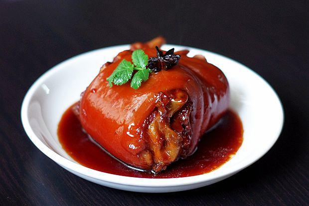

东坡肘子做法

菜品简介
东坡肘子是苏东坡亲手创制并秘传下来的一道传统名菜。它有着肥而不腻，粑而不烂，入口即化，回味绵长的特点，香气四溢，滋味尤佳，可谓是色香味俱佳。
食材
主料
猪肘子一个、老姜两块、葱少许、大蒜
| 类型 |
名称 |
数量 |
| 主料 |
猪肘子 |
一个 |
| 主料 |
老姜 |
两块 |
| 主料 |
葱 |
少许 |
配料
菜油、生抽、老抽、五香粉、淀粉、花椒、醋、白糖
做法步骤
- 猪肘子洗净，水烧开，加入大蒜、老姜、花椒、放入猪肘子，小火煮2小时。
- 再用蒸锅蒸1小时。
- 炒锅加热放油，加入蒸肉汤汁，加入生抽、醋、白糖、五香粉。
- 放入肘子，烧10分钟。
- 捞出，盛入盘子中。
- 剩余汤汁用淀粉勾芡，加入小蒜花。
- 将汤汁淋在肘子上，即可食用。